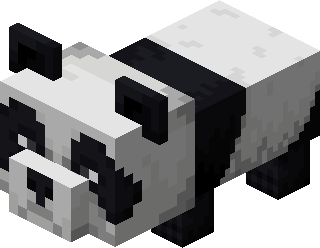
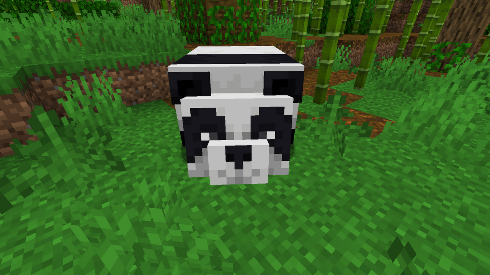
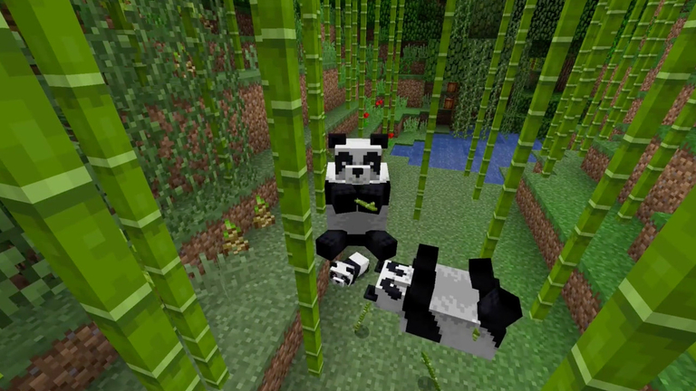
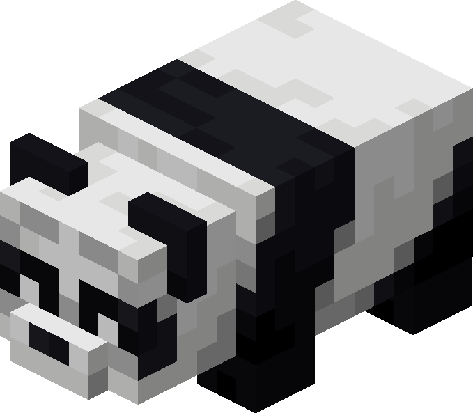
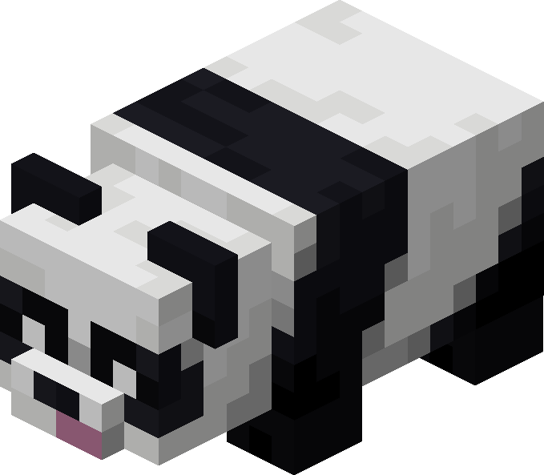
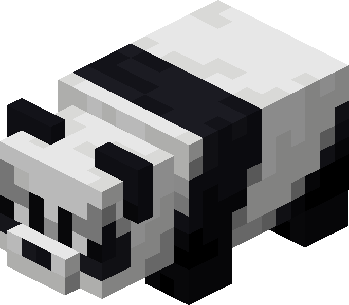
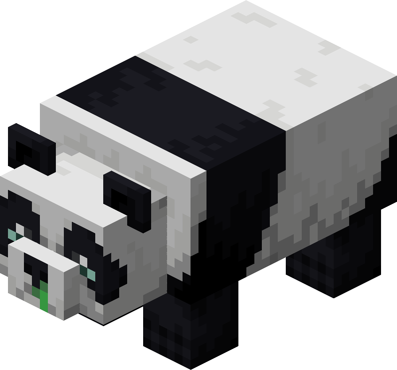
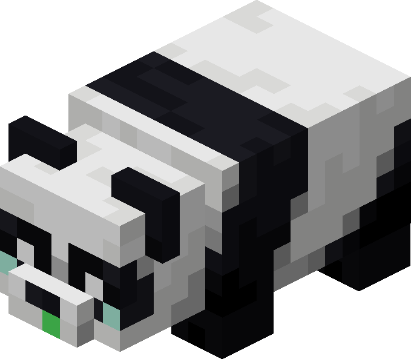
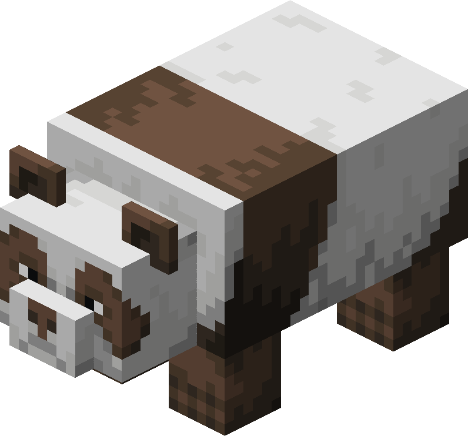
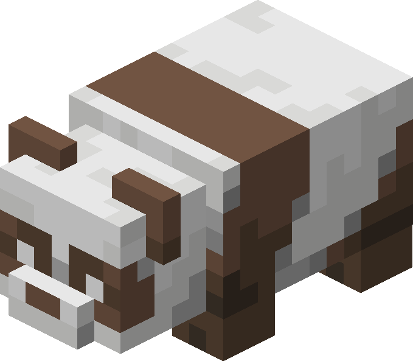

- Menu de Navegação
Pandas
|
 |
|---|
O Panda é uma criatura rara e neutra encontrada nas selvas do Minecraft, especialmente nas regiões
onde o
bambu é abundante. Apesar de normalmente
ser pacífico, esse animal possui um dos sistemas de
comportamento mais complexos entre as criaturas do jogo.
Diferentemente da maioria dos animais, nem todos os pandas se comportam da mesma maneira. Cada indivíduo
possui uma personalidade própria, capaz
de alterar sua aparência, movimentação, reação ao jogador e até
mesmo sua forma de lidar com perigos.
Alguns são extremamente lentos, outros passam boa parte do tempo rolando pelo chão, enquanto determinadas
variantes podem reagir agressivamente caso
sejam provocadas. Além disso, a reprodução dos pandas
utiliza um
sistema de genética, permitindo que características sejam herdadas de seus pis
Habitat natural

Os pandas vivem naturalmente nos biomas de Selva, aparecendo sobre blocos de grama em
regiões da superfície.
Entretanto, sua geração é relativamente
rara quando comparada à de outras criaturas.
A melhor região para procurá-los é a Selva de Bambu,
onde aparecem com maior frequência devido à abundância
de sua principal fonte de alimento.
Normalmente, pandas são encontrados sozinhos ou em pequenos grupos
de um
ou dois indivíduos. Cerca de 5% dos pandas gerados naturalmente aparecem
como filhotes, tornando
adultos
muito mais comuns durante a exploração.
Comportamento
Pandas são criaturas neutras. Na maior parte do tempo, eles não demonstram interesse em atacar o
jogador.
Entretanto, se forem feridos, normalmente
podem reagir atacando quem os provocou.
Seu comportamento lembra criaturas como lhamas e abelhas, já que a maioria dos pandas realiza apenas uma
reação ofensiva antes de voltar ao
comportamento normal. Na dificuldade Pacífico, pandas não atacam o
jogador.
Existem, porém, exceções importantes relacionadas à personalidade do animal, principalmente no caso dos Pandas Agressivos.
Alimentação

O bambu é o alimento mais associado aos pandas. Quando um jogador segura bambu próximo deles, os pandas
geralmente começam a segui-lo. Eles
deixam de acompanhar o jogador quando a distância se torna grande
demais, geralmente por volta de 16 blocos.
Pandas adultos também podem procurar e consumir itens de bambu ou bolo encontrados próximos. Esses
comportamentos tornam áreas de bambu
particularmente atraentes para manter grupos de pandas. Para
jogadores
construindo uma reserva ou zoológico, manter uma plantação de bambu próxima
facilita bastante o manejo
dos
animais.
Personalidades
Uma das características mais interessantes dos pandas é a existência de diferentes personalidades.
Cada panda pode apresentar uma entre sete possibilidades:
- Normal;
- Preguiçoso;
- Preocupado;
- Brincalhão;
- Agressivo;
- Fraco;
- Marrom.
Essas personalidades não são apenas mudanças cosméticas. Elas podem alterar significativamente o
comportamento, velocidade, saúde e reação do animal
ao ambiente.
Panda Normal
O Panda Normal é a variante mais comum. Pode ser reconhecido principalmente por sua expressão facial
característica, geralmente apresentando uma pequena
carranca. Não possui comportamentos exclusivos
relacionados à personalidade e utiliza grande parte das características básicas da espécie.
Por isso, ele funciona como referência para comparar as demais variantes. Para quem pretende simplesmente
manter pandas como animais decorativos ou em
uma reserva, essa costuma ser a variedade encontrada com
maior
facilidade.
Panda Preguiçoso
 |
|---|
O Panda Preguiçoso pode ser identificado por sua expressão sorridente. Sua principal característica é a
tendência de se deitar de costas no chão. Eles também
se movimentam consideravelmente mais devagar do
que
pandas comuns.
Na prática, estão entre as criaturas terrestres mais lentas do jogo. Essa lentidão pode tornar o transporte
desses pandas particularmente trabalhoso. Na Edição
Java,
um panda preguiçoso que esteja deitado pode não
seguir imediatamente um jogador segurando bambu. Na Edição
Bedrock, segurar bambu próximo ao animal faz
com
que ele interrompa esse comportamento e comece a seguir o jogador.
Panda Preocupado
O Panda Preocupado pode ser reconhecido por sua expressão constantemente apreensiva. Ele possui um
comportamento mais medroso do que os outros pandas.
Esses animais normalmente evitam jogadores e várias
criaturas hostis.
Durante tempestades, o comportamento se torna ainda mais evidente: eles podem começar a tremer e esconder o
rosto. Isso faz dessa personalidade uma das mais
visualmente distintas. Na Edição
Java, pandas preocupados
também podem apresentar diferenças relacionadas ao consumo espontâneo de bambu e bolo.
Panda Brincalhão
 |
|---|
O Panda Brincalhão pode ser identificado pela língua aparecendo para fora da boca. Sua característica mais
marcante é a tendência de rolar pelo terreno.
Enquanto filhotes de diferentes personalidades podem
brincar e
rolar ocasionalmente, pandas brincalhões continuam realizando esse comportamento mesmo
depois de
adultos.
Essa característica pode ser divertida de observar, mas também representa um risco. Pandas não possuem
consciência perfeita do terreno ao iniciar uma
cambalhota. Por isso, um panda brincalhão próximo de
penhascos, lava ou grandes quedas pode acabar se colocando em perigo.
Panda Agressivo
 |
|---|
O Panda Agressivo é uma das variantes mais importantes para jogadores conhecerem. Ele pode ser identificado
pelas sobrancelhas grossas e pela expressão
severa. Ao contrário dos pandas comuns, que normalmente
revidam
apenas brevemente quando atacados, pandas agressivos podem continuar perseguindo
e atacando seu alvo.
Eles permanecem hostis até que o inimigo morra ou consiga escapar de seu alcance. Também não entram em pânico
da mesma forma que outros pandas
quando são feridos. Na Edição Java, seu comportamento ofensivo pode
ser
especialmente perigoso.
Panda Fraco
 |
 |
|---|
O Panda Fraco possui uma aparência bastante característica. Seus olhos parecem marejados e o nariz apresenta
uma aparência semelhante a uma secreção.
Além disso, eles possuem apenas metade da saúde de um panda
normal.
Essa característica torna a variante particularmente vulnerável a quedas, ataques e outros perigos
ambientais. Quando filhotes, pandas fracos também
espirram com muito mais frequência do que outras
variantes. Quem pretende manter um panda fraco deve tomar cuidados adicionais com o ambiente
onde ele
será
colocado.
Panda Marrom
 |
 |
|---|
O Panda Marrom é a variante mais rara. Sua principal diferença visual é substituir grande parte das regiões
tradicionalmente pretas do panda por uma tonalidade
marrom. Encontrar um panda marrom naturalmente pode
exigir muita sorte.
Sua raridade está relacionada ao sistema genético dos pandas, pois a coloração marrom é uma característica
recessiva. Isso significa que a aparência marrom
somente se manifesta quando determinadas condições
genéticas são atendidas. Para jogadores interessados em colecionar todas as variantes, o Panda Marrom
normalmente representa o maior desafio.